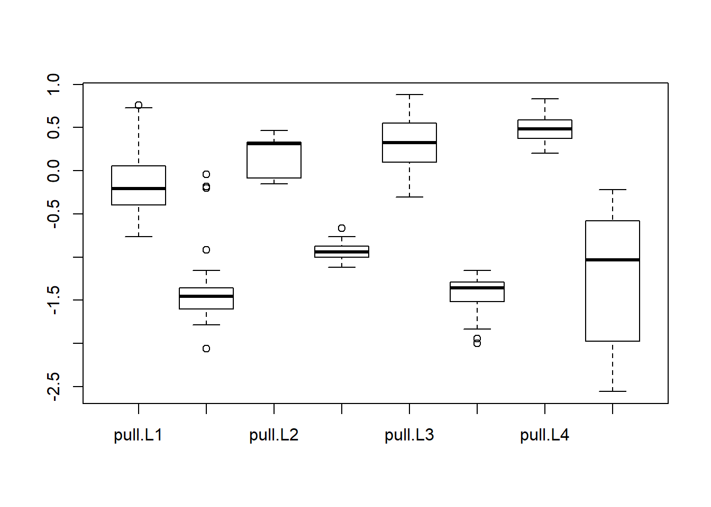

Chapter 5 Linear Models
Note: I have rephrased some parts of the questions for clarity. These changes are bolded. Due to the random numbers, the exact values of the answers, despite the same seeds, might differ. So please be mindful of that.
First, upload necessary package(s).
library(dplyr) # uplaods the function filter() and %>%
library(rafalib) # important for plotting with base R
library(contrast)5.1 Exercises
Question 1
We have shown how to find the least squares estimates with matrix algebra. These estimates are random variables as they are linear combinations of the data. For these estimates to be useful, we also need to compute the standard errors. Here we review standard errors in the context of linear models. To see this, we can run a Monte Carlo simulation to imitate the collection of falling object data. Specifically, we will generate the data repeatedly and compute the estimate for the quadratic term each time.
Now we act as if we didn’t know \(h0\), \(v0\) and \(-0.5*g\) and use regression to estimate these. We can rewrite the model as \(y = \beta_0 + \beta_1t + \beta_2t^2 + \epsilon\) and obtain the LSE we have used in this class. Note that \(g = -2\beta_2\).
To obtain the LSE in R we could write:
Given how we have defined A, which of the following is the LSE of \(g\), the accerleration due to gravity?
Y = matrix(y,nrow=length(y), ncol = 1) # convert vector y into matrix Y
betahat <- solve(crossprod(X)) %*% t(X) %*%Y
betahat <- A %*% Y # both ways work fine
betahat[[3]] * -2 # beta2 * -2 = gravity## [1] 9.279798## [1] 9.279798The answer is C.
Answer A is wrong because 9.8 is not an estimate; it is the exact value we are looking for. Due to measurement error rnorm(n, sd=1) that is generated in y, we will never achieve 9.8. Answer B is wrong because this gives three coefficients (intercept h0, v0 and -0.5g). Answer D is wrong because A is created solely from the model matrix X, not also from the data y.
Question 2
In the lines of code above, the function rnorm introduced randomness. This means that each time the lines of code above are repeated, the estimate of g will be different.
Use the code above in conjunction with the function replicate to generate 100,000 Monte Carlo simulated datasets. For each dataset, compute an estimate of g. (Remember to multiply by -2.)
What is the standard error of this estimate?
set.seed(1)
gravity_list <- replicate(100000, {
y = h0 + v0 *tt - 0.5* g*tt^2 + rnorm(n,sd=1)
Y = matrix(y,nrow=length(y), ncol = 1)
betahat <- solve(crossprod(X)) %*% t(X) %*%Y
third_beta <- betahat[[3]] * -2
return(third_beta)
})
popsd(gravity_list)## [1] 0.4297449Function popsd, instead of sd, is used because we are not dealing with a sample of coefficients. sd adjusts for the bias in a sample by using denominator n-1 rather than n. In this case, there is no reason to adjust for the bias because we are directly interested in measuring the spread of the distribution of third_beta. Standard error of a random variable is the standard deviation of the distribution; gravity_list captures the distribution of third_beta. Therefore we compute standard deviation.
Question 3
In the father and son height examples, we have randomness because we have a random sample of father and son pairs. For the sake of illustration, let’s assume that this is the entire population:
Now let’s run a Monte Carlo simulation in which we take a sample of size 50 over and over again. Here is how we obtain one sample:
N = 50
index = sample(n,N)
sampledat = father.son[index,]
x = sampledat$fheight
y = sampledat$sheight
betahat = lm(y~x)$coefUse the function replicate to take 10,000 samples.
What is the standard error of the slope estimate? That is, calculate the standard deviation of the estimate from the observed values obtained from many random samples.
x = father.son$fheight
y = father.son$sheight
n = length(y)
N = 50
set.seed(1)
output <- replicate(10000, {
index = sample(n,N)
sampledat = father.son[index,]
x = sampledat$fheight
y = sampledat$sheight
betahat = lm(y~x)$coef
return(betahat[[2]])
})
popsd(output)## [1] 0.1243209Question 4
Which of the following is closest to the covariance between father heights and son heights?
5.3 Exercises
Question 1
Given the factors we have defined above and without defining any new ones, which of the following R formula will produce a design matrix (model matrix) that lets us analyze the effect of condition, controlling for the different days?
day <- c('A','A','B','B','C','C')
condition <- c('control','treatment','control','treatment','control','treatment')
model.matrix(~day+condition) # answer is A## (Intercept) dayB dayC conditiontreatment
## 1 1 0 0 0
## 2 1 0 0 1
## 3 1 1 0 0
## 4 1 1 0 1
## 5 1 0 1 0
## 6 1 0 1 1
## attr(,"assign")
## [1] 0 1 1 2
## attr(,"contrasts")
## attr(,"contrasts")$day
## [1] "contr.treatment"
##
## attr(,"contrasts")$condition
## [1] "contr.treatment"5.5 Exercises
Question 1
You can make a design matrix X for a two group comparison, either using model.matrix or simply with:
In order to compare two groups, where the first group has Nx=5 samples and the second group has Ny=7 samples, what is the element in the 1st row and 1st column of \(X^TX\)?
Nx <- 5
Ny <- 7
X <- cbind(rep(1,Nx+Ny), rep(c(0,1),c(Nx,Ny)))
crossprod(X)[1,1] # this is equal to Nx + Ny## [1] 12Question 2
The other entries of \(X^TX\) are all the same. What is the number?
## [,1] [,2]
## [1,] 12 7
## [2,] 7 75.1 5.7 Exercises
library(UsingR)
N <- 50
set.seed(1)
index <- sample(n,N)
sampledat <- father.son[index,]
x <- sampledat$fheight
y <- sampledat$sheight
betahat <- lm(y~x)$coefQuestion 1
The fitted values \(\hat{Y}\) from a linear model can be obtained with:
## 1 2 3 4 5 6 7
## 70.62707 70.36129 70.86093 68.73019 65.59181 70.55285 70.21256
## 8 9 10 11 12 13 14
## 68.62521 67.06729 69.64913 69.09958 71.70621 68.31598 70.57027
## 15 16 17 18 19 20 21
## 70.39537 70.39613 68.73977 68.98874 71.47021 72.03615 69.55975
## 22 23 24 25 26 27 28
## 68.15895 66.63557 71.53651 69.57083 69.71050 67.14263 70.99719
## 29 30 31 32 33 34 35
## 67.11046 69.04901 66.65243 67.82895 68.24209 70.70156 65.50431
## 36 37 38 39 40 41 42
## 67.36000 69.30065 67.94424 66.35150 71.40489 71.64301 66.81654
## 43 44 45 46 47 48 49
## 69.22900 69.11769 69.21793 69.69519 67.00674 68.67869 67.40752
## 50
## 69.28800What is the sum of the squared residuals, where residuals are given by \(r_i = Y_i - \hat{Y}_i\)?
## [1] 256.2152## [1] 256.2152In the four questions, we will calculate the standard error of the least square estimates (i.e., coefficients / beta hats from the linear model). This can easily be achieved with function lm(), but we will explore what happens within lm().
It is important to recall that \(\hat{Y}_i\) is the fitted values from the model \(X\hat{\beta}\), and that \(Y\) is the actual data. A difference between these two is the residual.
Question 2
Our estimate of \(\sigma^2\) will be the sum of squared residuals divided by \(N-p\), the sample size minus the number of terms in the model. Since we have a sample of 50 and 2 terms in the model (an intercept and a slope), our estimate of \(\sigma^2\) will be the sum of squared residuals divided by 48. Use the answer from Question 1 to provide an estimate of \(\sigma^2\).
## [1] 5.337816So what exactly is \(\sigma^2\)? To understand it, we need to revisit a typical linear model \(Y_i = \beta_0 + \beta_1X_i + \epsilon_i\), where _0 is the intercept. When you are estimating \(Y_i\) from a model, you can get variance for \(Y_i\). However, since the parameters (\(\beta_0\) and \(\beta_1\)) are assumed to be fixed (known values), the variance of the \(Y_i\) only comes from the \(\epsilon_i\). Therefore \(\sigma^2\) is basically the variance of \(\epsilon\).
Question 3
Form the design matrix \(X\) (Note: use a capital X). This can be done by combining a column of 1’s with a column containing x, the fathers’ heights.
Now calculate \((X^TX)^{-1}\). Use the solve function for the inverse and t for the transpose. What is the element in the first row, first column?
## [1] 11.30275Remember that crossprod(X) is equivalent to t(X) %*% X.
Question 4
Now we are one step away from the standard error of \(\hat{\beta}\). Take the diagonals from the \((X^TX)^{-1}\) matrix above, using the diag function. Multiply our estmate of \(\sigma^2\) and the diagonals of this matrix. This is the estimated variance of \(\hat{\beta}\), so take the square root of this. You should end up two numbers: the standard error for the intercept and the standard error for the slope. What is the standard error for the slope?
## x
## 0.1141966Although the questions are relatively straightforward, the math derivation is not. Do not worry if you do not understand the derivation. The only thing that matters is that we have just computed the standard error of a coefficient in linear regression. And this can all be done with function lm.
5.11 Exercises
Suppose we have an experiment with two species A and B, and two conditions, control and treated.
species <- factor(c("A","A","B","B"))
condition <- factor(c("control","treated","control","treated"))We will use the formula of ~ species + condition to create the model matrix: model.matrix(~species + condition)
Question 1
Suppose we want to build a contrast of coefficients for the above experimental design. You can either figure this question out by looking at the design matrix, or by using
the contrast function from the contrast library with random numbers for y. The contrast vector will be returned as contrast(...)$X.
What should the contrast vector be, to obtain the difference between the species B control group and the species A treatment group (species B control - species A treatment)?
Assume that the coeffcients (columns of design matrix) are: Intercept, speciesB, condition-treated.
fit <- lm(rnorm(4) ~ species + condition)
table(species,condition) # just like in the species vector, there are four units total. ## condition
## species control treated
## A 1 1
## B 1 1etc <- contrast(fit, list(species ='B',condition='control'),
list(species ='A',condition='treated'))
etc$X## (Intercept) speciesB conditiontreated
## 1 0 1 -1
## attr(,"assign")
## [1] 0 1 2
## attr(,"contrasts")
## attr(,"contrasts")$species
## [1] "contr.treatment"
##
## attr(,"contrasts")$condition
## [1] "contr.treatment"I made a model matrix by using rnorm(4), which generates four random numbers (mean=0, sd=1). Then I performed a contrast between species B control and species A treatment groups using the contrast function. I stored the results in etc, which shows that the answer is D (0,1,-1).
Question 2
Use the Rmd script to load the spider dataset. Suppose we build a model using two variables: ~ type + leg. What is the t-statistic for the contrast of leg pair L4 vs. leg pair L2?
spider <- read.csv("spider_wolff_gorb_2013.csv", skip=1)
fit <- lm(friction~type+leg, data = spider)
res <- contrast(fit, list(leg ='L4',type = 'pull'),
list(leg = 'L2',type='pull'))
res$testStat## 1
## 2.451974Question 3
X <- model.matrix(~ type + leg, data=spider)
Sigma.hat <- sum(fit$residuals^2)/(nrow(X) - ncol(X)) * solve(t(X) %*% X)Using the estimate \(\Sigma\) (estimated covariance matrix), what is your estimate of \(cov(\hat{\beta}_{L4},\hat{\beta}_{L2})\)? Our contrast matrix for the desired comparison is:
The answer is 0.0006389179. It is important to know that sqrt(diag(Sigma.hat)) gives standard error of the least square estimates.
Question 4
Suppose that we notice that the within-group variances for the groups with smaller frictional coeffcients are generally smaller, and so we try to apply a transformation to the frictional coeffcients to make the within-group variances more constant.
Add a new variable log2friction to the spider dataframe:
The Y values now look like:

Run a linear model of log2friction with type, leg and interactions between type and leg. What is the t-statistic for the interaction of type push and leg L4? If this t-statistic is sufficiently large, we would reject the null hypothesis that the push vs. pull effect on log2(friction) is the same in L4 as in L1.
logfit <- lm(log2friction~type+leg+type:leg, data = spider)
summary(logfit)[[4]] # t-statistic for each factor## Estimate Std. Error t value Pr(>|t|)
## (Intercept) -0.1682816 0.06613097 -2.5446712 1.148701e-02
## typepush -1.2065650 0.09352331 -12.9012220 4.472641e-30
## legL2 0.3468125 0.11952459 2.9015992 4.014075e-03
## legL3 0.4899946 0.08504571 5.7615441 2.237221e-08
## legL4 0.6466753 0.08994784 7.1894475 6.199475e-12
## typepush:legL2 0.0996718 0.16903330 0.5896578 5.559060e-01
## typepush:legL3 -0.5407473 0.12027280 -4.4960067 1.023073e-05
## typepush:legL4 -0.4692035 0.12720545 -3.6885485 2.719589e-04Question 5
Using the same analysis of log2 transformed data, what is the F-value for all of the type:leg interaction terms in an ANOVA? If this value is sufficiently large, we would reject the null hypothesis that the push vs. pull effect on log2(friction) is the same for all leg pairs.
## Analysis of Variance Table
##
## Response: log2friction
## Df Sum Sq Mean Sq F value Pr(>F)
## type 1 164.709 164.709 1107.714 < 2.2e-16 ***
## leg 3 7.065 2.355 15.838 1.589e-09 ***
## type:leg 3 4.774 1.591 10.701 1.130e-06 ***
## Residuals 274 40.742 0.149
## ---
## Signif. codes: 0 '***' 0.001 '**' 0.01 '*' 0.05 '.' 0.1 ' ' 1